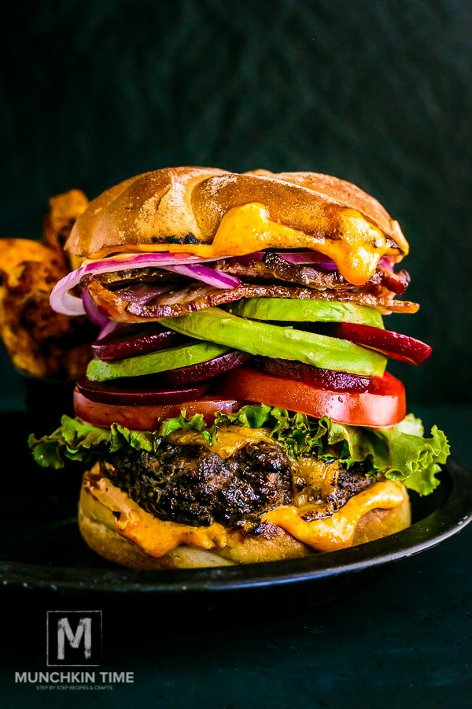

Kaip iškepti puikų naminį mėsainį
Mūsų tobuli mėsainio paplotėliai būtų gaminami iš 1 kg maltos jautienos mentės, 1 arbat. š. alyvuogių aliejaus, 100 ml porterio alaus, didelės susmulkintos svogūno galvos, poros šaukštelių juodos duonos džiūvėsėlių ir saujelės supjaustytų prieskoninių žolelių (čiobrelių ar petražolių ar kt.). Tarp alaus burbuliukų ir mėsos baltymų turbūt įvyksta kažkokia cheminė reakcija, nes jie labai puikiai „suriša“ mišinį į vientisą visumą, suminkština mėsą ir subalansuoja skonius.
- Pakepinkite svogūnus, kol suminkštės ir lengvai pagels, ir palikite atvėsti. Tada sudėkite mėsą, alų, džiūvėsėlius, žoleles ir prieskonius ir atsargiai viską sumaišykite.
- Padalykite mėsą ir suformuokite 12 plokščių paplotėlių su įduba viduryje. Padėkite į šaldytuvą valandai.
- Griliaus groteles patepkite aliejumi, kad mėsa neprikeptų. Kepkite ant vidutinės ugnies, nejudinkite ir nespauskite, taip tik ištekės mėsos sultys. Po maždaug 3 min. apverskite ir kepkite dar kokias 4–6 min., tik šiukštu neperkepkite. Tačiau įsitikinkite, kad mėsa gerai iškepusi, jei su jumis valgys ir vaikai. Likus kokiai kepimo minutei, į suformuotą įdubą įdėkite gabalėlį sūrio ir leiskite jam išsilydyti.
- Nuimkite kepsnelius nuo ugnies ir leiskite mėsai minutėlę kitą „pailsėti“. Per tą laiką galite ant grotelių lengvai apskrudinti perpus perpjautas ir šiek tiek sviestu pateptas bandelės puseles. Jei norite sveikesnio varianto, rinkitės pilno grūdo bandeles.
- Na ir teliko baigiamieji darbai – traškios salotos lapas, svogūnai, pomidoro riekelė. Ak, ir, žinoma, padažas, nepamirškite padažo!
